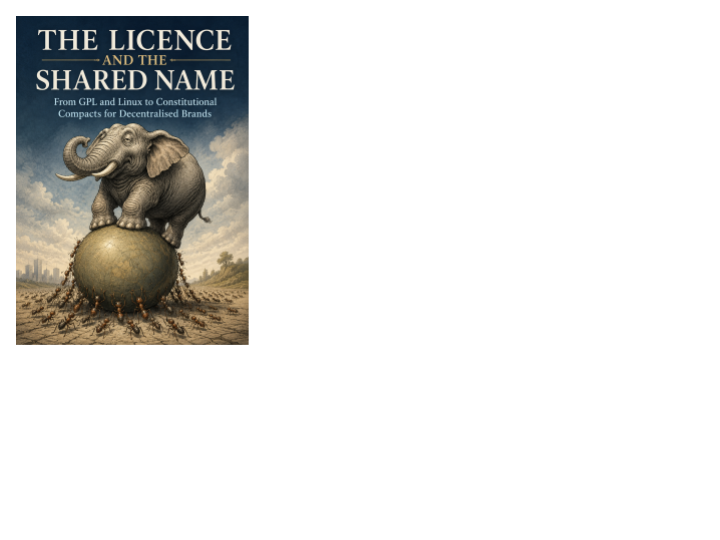

Technology · Axiologic Research Editions
The Licence and the Shared Name
How to Give an Idea Away Without Letting It Be Captured
A proposal for sharing an idea while preserving its conditions of openness, correction and resistance to capture.
135 pagesEnglish2026 edition
Ideas need terms of freedom
An idea can be shared and still be captured by a faction, owner or institution. This book asks how a common name and a licence can protect the openness an idea needs to evolve.